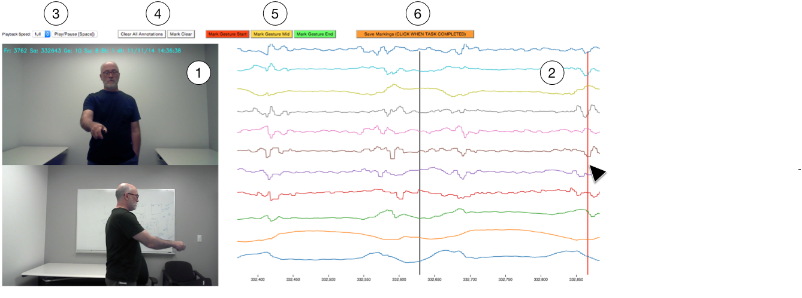

This is a short document that should help you complete yout HIT effectively. If you haven't done so already, please also take a look at the HOWTO video.
The objective of this task is to mark gesture phases in a data set.
The image above shows the user interface for your task. The user interface shows a video (1) of a test participant entering a motion gesture, and shows a plot of the motion data (2) as captured by a motion sensor. Your task will be to use the user interface to mark the start, middle and end of the gesture entry shown in the video.
The black cursor on the plot shows the position of the video player and the corresponding data captured by the motion sensor. The "play/pause" button (3) can be used to start and stop the video. The drop-down menu left of the "play/pause" button can be used to change the video playback speed from full to one half or one quarter.
Your task will be to mark the start, middle and end of the gesture entry shown. You will need to correlate the video image with the data plot to determine the different phases of gesture entry. Use the group of red, yellow and green colored buttons (5) to mark different phases of gesture entry:
Use the red "Mark Gesture Start" button to mark the beginning of the gesture. Use the yellow "Mark Gesture Mid" button to mark the middle of a gesture and the green "Mark Gesture End" button to mark the end of a the gesture. Once the type of marking has been selected via the buttons, you can mark the selected gesture phase by dragging a region of the data plot. Note that the gesture middle phase can be slightly wider than the start or end phases. Multiple sequences of start-middle-end are allowed if this is apparent through viewing the video and the data. If you want to reset your markings, you can click on the "clear all annotations" button (4).